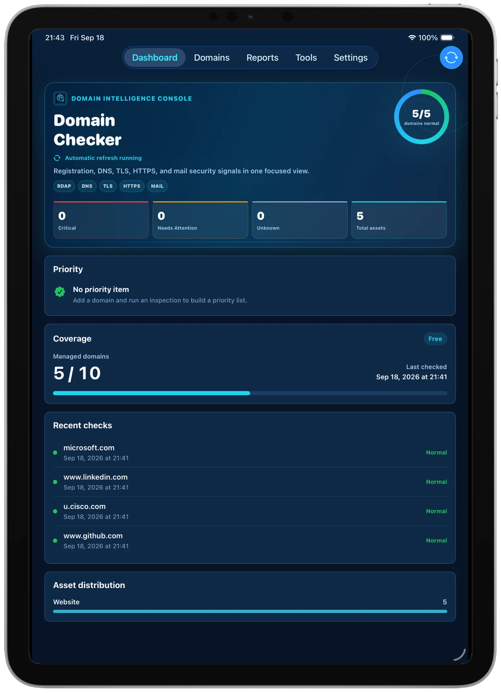

注册与到期
查看公开 RDAP 注册信息、到期日期、剩余天数、域名状态，以及可获取时的注册商信息。
域名健康检查工具
集中检查注册信息、DNS、HTTPS/TLS 与邮件安全，支持域名批量导入导出，并可直接生成 PDF 报告。专为 iPhone 与 iPad 设计。
专为 iPhone 与 iPad 设计 · 免费开始 · 无需订阅

功能
查看注册与到期信息、检查 DNS 记录、测试 HTTPS 与 TLS、核对邮件安全，并把结果整理成一份易读的健康报告。
查看公开 RDAP 注册信息、到期日期、剩余天数、域名状态，以及可获取时的注册商信息。
以结构化方式查看 A、AAAA、CNAME、NS、MX、TXT、SPF、DKIM 和 DMARC 相关记录。
测试可达性、HTTP 响应、TLS 握手和证书详情，并支持自定义 HTTPS 服务端口。
支持域名批量导入导出，使用 JSON 进行完整备份、迁移与恢复，并可导出易读的 PDF 报告。
一个流程
把注册信息、DNS、TLS、HTTPS、邮件安全和报告整理成一个可以反复使用的工作流。
传统方式
DOMAIN CHECKER
APP 体验
Domain Checker 现在会更充分地利用 iPad 屏幕空间，让仪表盘、诊断工具与检查详情都保持清晰易读。

专为 IPAD 优化
利用更大的 iPad 工作区，同时查看覆盖情况、最近检查、优先项目与整体健康状态，不再把大屏体验压缩成手机布局。

定向检查
在同一个工作区运行 DNS 与服务检查，并在更大的 iPad 画布中同时查看检查结果与临时检查历史。

结构化结果
在一个结构化详情页中查看注册、DNS、HTTP 与 SSL/TLS 结果，以清晰状态展示每项检查，并保留足够空间呈现具体证据。
数据与迁移
保留可持续使用的域名资产清单，需要时批量迁移，并把检查结果导出成真正可以分享的文件。
批量迁入或迁出域名清单，不需要换设备或重建环境时再逐条手工添加。
把域名健康检查结果导出成易读的 PDF，用于归档、分享、交接或内部文档。
隐私
域名资产清单和报告保存在本地应用数据中。不需要云账号，只有在你主动导出时才会创建备份文件。
流程
添加域名或 URL，运行检查，查看结构化结果；只有需要保存或分享时，再导出报告与备份。
直接粘贴域名、URL、明确的服务端口，或批量导入已有域名清单。
检查所选资产的注册信息、DNS、HTTPS、TLS 和邮件安全信号。
按注册信息、DNS、HTTP、TLS 和邮件分类阅读结果。
导出易读的 PDF 报告，并通过备份与恢复保存或迁移域名资产清单。
定价与方案
核心域名诊断能力在各档位均可使用。Plus 与 Pro 均为非消耗型应用内购买：一次付费，永久解锁，不收月费或年费。
Free
适合个人站点与较小规模的域名清单
Plus
适合多站点管理者与独立开发者
Pro
适合更大的域名资产组合与专业工作流
以上为美国 App Store 价格；不同国家或地区的实际售价可能有所不同。
OPSHOME 基础设施工具集
OpsHome NOC 提供可用性监控、私有基础设施、Docker Probe、Synology、Proxmox、VMware、Linux 主机、事件、告警、历史数据与 Web Console。